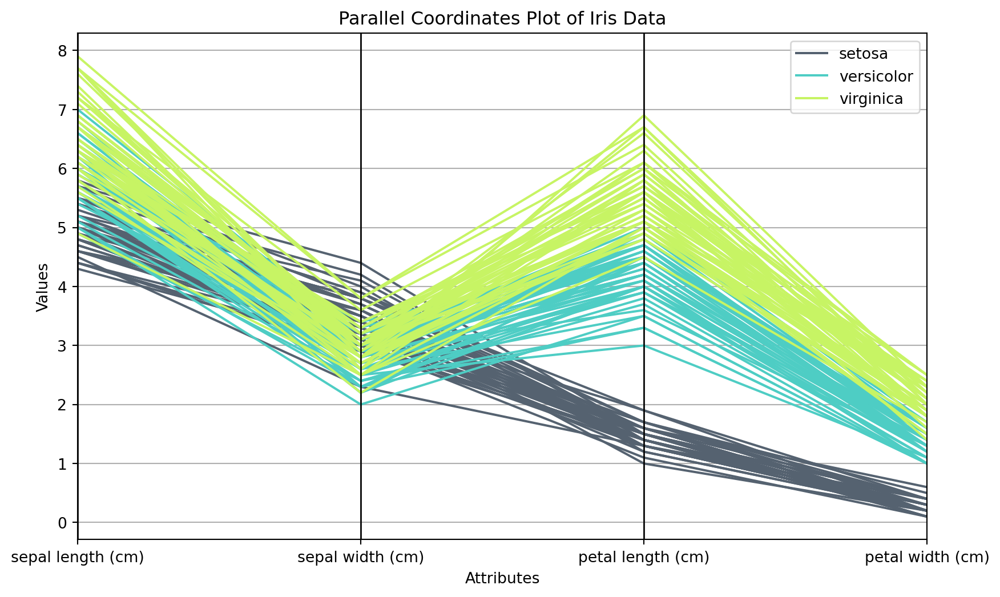

The goal of this case was to introduce the power of charts, and demonstrate how they can be used to uncover key patterns in a dataset. In this case, we learnt that, after cleaning, it is useful to examine the summary statistics of important variables. Later, then we can look at the variables individually, via one-dimensional charts. After which, we can evaluate relationships between variables via 2-dimensional charts. To look at 3-way relationships, one can use color or size in charts.
5.1 Steps you can take to avoid bad charts
Here are some steps to help avoid people misinterpretating your charts and ensure your charts communicate data effectively and accurately:
Label Axes Clearly:
Action: Always provide clear and descriptive labels for the x-axis and y-axis.
Benefit: This helps viewers understand what the chart is measuring and comparing.
Use Appropriate Scales:
Action: Ensure the scales on your axes are appropriate for the data being presented, starting from zero where necessary.
Benefit: This avoids exaggerating differences or trends in the data.
Provide Context:
Action: Include necessary context or background information, such as data source, time period, and any relevant notes.
Benefit: Context helps viewers interpret the data correctly and understand its relevance.
Choose the Right Chart Type:
Action: Select the chart type that best represents your data (e.g., bar chart for categorical data, line chart for trends over time).
Benefit: This ensures that the data is presented in the most understandable format.
Avoid Overloading with Data:
Action: Limit the amount of data displayed in a single chart to avoid clutter.
Benefit: A cleaner chart helps viewers focus on the key insights without being overwhelmed.
Use Consistent Color Schemes:
Action: Use consistent and color-blind friendly color schemes that differentiate data points without causing confusion.
Benefit: This helps in distinguishing different categories or series and avoids misinterpretation due to color issues.
Highlight Key Insights:
Action: Use annotations, different colors, or other visual cues to highlight key data points or trends.
Benefit: This draws attention to the most important parts of the data and aids in interpretation.
Avoid Distorting Data:
Action: Avoid using 3D effects or other distortions that can misrepresent data.
Benefit: This ensures that the data is presented accurately and prevents misleading viewers.
Show Data Distribution:
Action: Use boxplots, histograms, or other charts to show data distribution, not just summary statistics.
Benefit: This provides a fuller picture of the data, revealing any underlying patterns or outliers.
Add Descriptive Titles and Legends:
Action: Include descriptive titles and legends that clearly explain what the chart is showing.
Benefit: This helps viewers quickly grasp the purpose and content of the chart.
Use Gridlines Sparingly:
Action: Use gridlines to help viewers accurately read values, but don’t overuse them to the point of clutter.
Benefit: This aids in precision without overwhelming the chart.
Avoid Cherry-Picking Data:
Action: Present all relevant data, not just data that supports a particular narrative or viewpoint.
Benefit: This ensures a fair and unbiased representation of the data.
Review and Test Charts:
Action: Review charts with colleagues or test with a sample audience to identify potential misinterpretations.
Benefit: Feedback can help identify and correct any issues before presenting the chart to a wider audience.
Use Interactive Elements:
Action: When possible, use interactive charts that allow viewers to explore the data more deeply.
Benefit: This enables viewers to drill down into the data and gain a better understanding.
Regularly Update Data:
Action: Ensure that the data in your charts is up-to-date and accurate.
Benefit: This maintains the relevance and reliability of the insights provided by the charts.
5.2 Parallel coordinates plots
A parallel coordinates plot displays the values of multiple variables for a set of data points on parallel axes, allowing you to see patterns and relationships between the variables.
Axes: Each variable in the dataset is represented by a vertical axis.
Lines: Each data point is represented by a line that connects the values of each variable across the parallel axes.
Patterns: By observing how the lines intersect and align, you can identify patterns, correlations, and clusters in the data.
Comparisons: It is useful for comparing multiple observations and understanding the overall structure of the dataset.
Example:
Let’s create an example using the pandas and matplotlib libraries in Python. We’ll use the Iris dataset, which contains measurements of different species of iris flowers. Install scikit-learn if neccessary:
!pip install scikit-learn
Let’s create the plot
import pandas as pdimport matplotlib.pyplot as pltfrom pandas.plotting import parallel_coordinates# Load the Iris datasetfrom sklearn.datasets import load_irisiris_data = load_iris()# Convert to a DataFrameiris = pd.DataFrame(iris_data.data, columns=iris_data.feature_names)iris['species'] = pd.Categorical.from_codes(iris_data.target, iris_data.target_names)# Create a parallel coordinates plotplt.figure(figsize=(10, 6))parallel_coordinates(iris, 'species', color=('#556270', '#4ECDC4', '#C7F464'))# Show the plotplt.title('Parallel Coordinates Plot of Iris Data')plt.xlabel('Attributes')plt.ylabel('Values')plt.show()

Lines: Each line represents an individual iris flower sample.
Axes: The vertical axes represent the four measurements (sepal length, sepal width, petal length, and petal width).
Colors: Different colors represent different species of iris flowers (Setosa, Versicolor, Virginica).
Patterns: By examining how the lines group and intersect, we can observe that:
Setosa flowers have distinctly different measurements compared to Versicolor and Virginica flowers.
Versicolor and Virginica have overlapping measurements, but with careful observation, patterns and differences can still be discerned.
5.3 Colored backgrounds on scatterplots
In this case, we colored the background based on the color of the closest point in the dataset. This is useful for classification tasks - where we want to determine if continuous variates are able to classify data points. Here is a simple example of how to do this in Python. This process includes creating a mesh grid of points, determining the closest point in the dataset for each point in the grid, and coloring the grid accordingly.
Example:
import numpy as npimport seaborn as snsimport matplotlib.pyplot as pltfrom scipy.spatial import cKDTreefrom matplotlib.colors import ListedColormap# Load the Iris datasetiris = sns.load_dataset('iris')# Extract the relevant datax = iris['sepal_length']y = iris['sepal_width']species = iris['species']# Create a color map for species - dictionary of colors to speciesspecies_colors = {'setosa': (0.1215, 0.466666, 0.705882), 'versicolor': (0.17254, 0.6274, 0.17259), 'virginica': (0.83921, 0.15294, 0.1568)}# This is a series object where each row is the color associated with teh speciescolors = iris['species'].map(species_colors)print(colors)# Create a mesh gridx_min, x_max = x.min() -0.5, x.max() +0.5y_min, y_max = y.min() -0.5, y.max() +0.5xx, yy = np.meshgrid(np.linspace(x_min, x_max, 500), np.linspace(y_min, y_max, 500))# Combine the grid points into a single arraygrid_points = np.c_[xx.ravel(), yy.ravel()]# This code finds the closes points# Create a KDTree for fast nearest-neighbor lookuptree = cKDTree(np.c_[x, y])# Find the index of the closest point in the dataset for each grid point_, idx = tree.query(grid_points)# Map the indices to colorsgrid_colors = np.array(colors.tolist())[idx].reshape(xx.shape + (3,))# Plot the background gridplt.figure(figsize=(10, 6))plt.imshow(grid_colors, extent=(x_min, x_max, y_min, y_max), origin='lower', aspect='auto', alpha=0.3)# Overlay the scatter plotsns.scatterplot(x=x, y=y, hue=species, palette=species_colors, style=species, edgecolor='k')# Customize and show the plotplt.title('2D Scatterplot of Iris Data with Colored Background Grid')plt.xlabel('Sepal Length (cm)')plt.ylabel('Sepal Width (cm)')plt.legend(title='Species')plt.show()